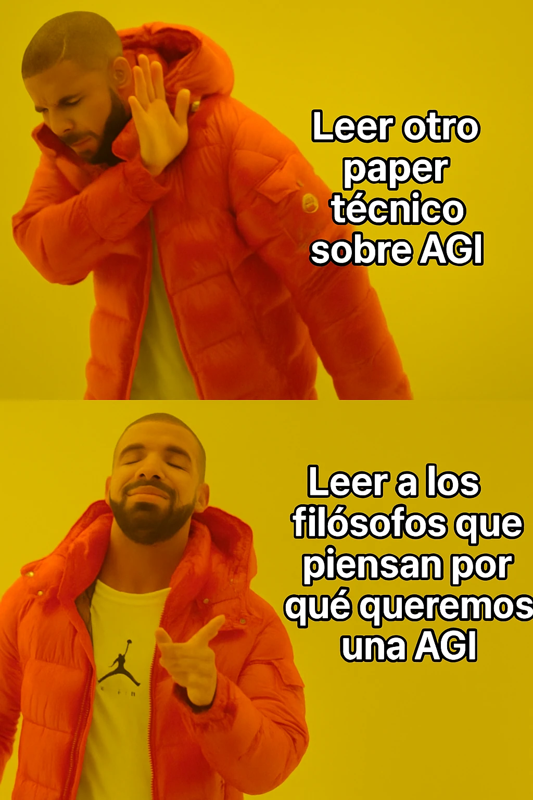

estrategIA #108 ·
Antes del cómo, preguntar para qué
El contexto
AGI es la sigla inglesa de inteligencia artificial general: una IA capaz de realizar tareas muy diversas. El meme cambia un artículo técnico sobre cómo construirla por una lectura sobre para qué la queremos. La edición presentaba pensadores que reflexionan sobre esa pregunta y sus consecuencias humanas.
Publicado en: estrategIA #108 — Buscando a los filósofos de la IA
Leer el texto de la imagen
Leer otro paper técnico sobre AGI Leer a los filósofos que piensan por qué queremos una AGI